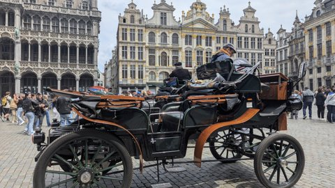
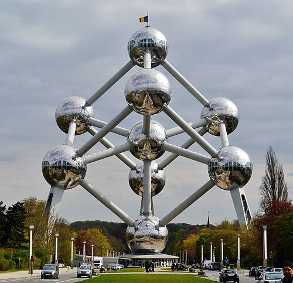
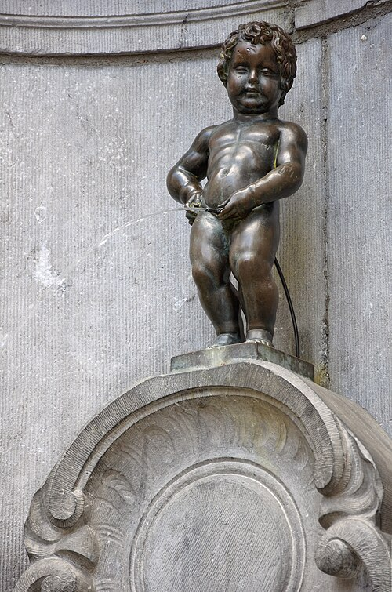

This map shows 18 of the most-searched sights in Brussels as photo spots, ranked by how often people search for them: Grand Place, Atomium, Manneken Pis, King Baudouin Stadium and Mini-Europe lead the list. Every spot has a pin on the subject and a phone icon showing where to stand, with tips for shooting it on your phone: which lens to use, how to frame it, a settings tip and the best time of day. Directions and Navigate buttons take you to the standing point on foot or by public transport. 3 spots are free to view; the full map is for members.
The 3 free photo spots
1Grand Place

The Grand-Place is the central square of Brussels, and it is hard to take a poor photo here. The ground is entirely paved and measures 68 by 110 metres, so the buildings rise straight up around you on every side. They include the Baroque guildhalls of the old Guilds of Brussels, the Flamboyant Town Hall, and the neo-Gothic King's House (or Bread House), which holds the Brussels City Museum. Most of the square was destroyed in the French bombardment of 1695. Only the Town Hall's façade and tower survived, and the houses around it were rebuilt in the years afterwards and modified in the centuries that followed. The Town Hall's spire is about 96 metres high and is topped by a statue of Saint Michael, so it makes a strong vertical subject. The square has been a UNESCO World Heritage Site since 1998. In August of every even year a huge flower carpet is laid out in the centre, and at Christmas and New Year a tree and festive events fill the space. For phone photos, the best views come from standing in the middle and turning slowly on the spot. Shoot the Town Hall to the south, then the King's House opposite, then the guildhall façades along the sides. Keep your phone upright for the tower and across for the rows of houses. Wipe your lens first, and take a few frames in each direction, because the view changes with every quarter-turn.
Where it is: In the old centre of Brussels, Belgium, in the square that holds the city's Town Hall. St Nicholas' Church is close by.
Shooting it on your phone
Lens: Start with the ultra-wide (0.5x) to fit whole façades and the tall tower in one frame. Use the default lens (1x) for general views, and the telephoto (2x-5x, depending on your phone) for carvings and details high up on the buildings.
Where to stand: Stand right at the subject: the phone icon on the map marks the spot. Face south for the Town Hall and its spire, then turn to face the King's House across the square.
Framing: Turn on the gridlines and line the Town Hall tower up with a vertical grid line so it does not lean. Hold the phone upright and tilt it back slightly for the spire, using the ultra-wide (0.5x) if you cannot fit it in. For the guildhalls, switch to landscape and keep the phone level so the rooflines stay straight. If you want people in the picture, wait for a gap in the crowd. A Live Photo can catch a moment of movement, such as a tour group crossing the square.
Settings tip: Tap the sky or the façade to set focus, then drag the exposure slider down a little if the bright sky is washing out the stonework. After dark, use night mode and brace your elbows against your body to keep the phone steady.
Best time: Early in the morning is usually quietest. After dark, use night mode and check what lighting is on when you get there. Check ahead for events, as the flower carpet and Christmas decorations change how the square looks.
2Atomium

The Atomium is Brussels' great steel atom: nine shiny spheres joined by tubes, standing 102 metres tall. It was built as the centrepiece of the 1958 World's Fair and was only meant to last six months, but people liked it so much that it stayed. The spheres are 18 metres across, and together they show an iron crystal magnified 165 billion times. After a renovation in 2004–2006 the spheres were re-clad in stainless steel, so they catch the sky and change colour as the light changes.
It photographs well because the shape is so bold and simple. From the plaza at its foot you can look straight up and see the spheres and tubes converging overhead, which gives a strong, almost abstract picture. Step back along Boulevard du Centenaire and you get the whole structure rising out of the park, and a person in the frame shows how big it is. Parc de Laeken offers a quieter view, with the Atomium seen through trees.
The plaza is wide and open, so there is room to move around and try a few angles. At night the spheres are lit by LEDs, which makes a different kind of picture. Inside, only some of the spheres are open to visitors, but you do not need to go in to get good photos of the outside.
Where it is: The Atomium stands on the Heysel/Heizel Plateau in Laeken, in the northern part of the City of Brussels. It is opposite the Centenary Palace of the Brussels Expo exhibition centre.
Shooting it on your phone
Lens: Start with the ultra-wide (0.5x) on the plaza, because the structure is huge and you will be standing close. Use the default lens (1x) from Boulevard du Centenaire for the whole structure, and telephoto (2x-5x, depending on your phone) for the trees-and-spheres view from Parc de Laeken.
Where to stand: Stand in Place de l'Atomium. Looking up from the plaza at the base of the structure, with the spheres and connecting tubes converging overhead. The Atomium is right beside you, to the west. From here you look up from the base, with the spheres and connecting tubes converging overhead.
Framing: Hold the phone low, tilt it up and let the tubes lead the eye towards the spheres. Switch on gridlines and line up one of the tubes with a grid line to keep the shot tidy. For the full-structure shot, walk back along Boulevard du Centenaire and include a person for scale. Parc de Laeken is a quieter alternative, with trees framing the spheres.
Settings tip: Tap on a sphere to set focus, then slide the exposure down a little so the bright steel keeps its detail against the sky. In the evening, try night mode and hold the phone steady against a bench or railing.
Best time: Check the light before you go, as the best time of day depends on the weather and the season. The spheres are lit at night, so an evening visit gives a different mood.
3Manneken Pis

Manneken Pis is a small bronze boy, only 55.5 cm tall, set in a stone niche on a street corner in the middle of Brussels. It is one of the city's best-known symbols, and visitors tend to be surprised by how small it is. That is part of the fun. The current sculpture goes back to a design by Jérôme Duquesnoy the Elder from 1619. The blue stone niche in rocaille style was added in 1770, and wrought iron railings protect the whole corner. The figure on the street today is a replica from 1965, and the original is kept in the Brussels City Museum. It photographs well because it is always changing. The boy is regularly dressed in costumes, and his wardrobe runs to around a thousand outfits, so no two visits look quite the same. The subject is the statue itself, so stand a few steps away on the Rue de l'Étuve side, off to one side of the crowd, and shoot at a gentle three-quarter angle rather than head-on. From there you get the boy, the niche and the grille together, with the street and passers-by around him. That gives you the classic postcard view. If you want a tighter picture of the niche and railing, try the corner of Rue du Chêne instead. Be patient, as people tend to gather for a quick photo and then move on.
Where it is: Manneken Pis stands in central Brussels, at the corner where Rue du Chêne meets the pedestrian Rue de l'Étuve. It is a short walk from the Grand-Place.
Shooting it on your phone
Lens: Start with the default lens (1x) for the statue and its niche with some street around it. If the crowd is in the way, use telephoto (2x-3x) to fill the frame with the niche from a little further back. The ultra-wide (0.5x) lens shows more of the street but makes the statue look tiny.
Where to stand: Stand right at the subject: the phone icon on the map marks the spot. The subject is the statue itself. Step a few metres away along Rue de l'Étuve, a little to one side, and you will see the bronze boy in his stone niche behind the iron grille, set high on the corner, with the street and passers-by around him.
Framing: Turn on gridlines and put the niche on one of the vertical lines, keeping the grille at the bottom of the frame. Shooting from the side at a three-quarter angle gives a cleaner picture than facing the statue head-on with the group. For a more compressed shot, with less of the shopfronts and more of the statue, try the view from Rue du Chêne.
Settings tip: Tap on the statue to set focus, then drag the exposure slider down a touch if the bright street or sky washes out the bronze. Take a few shots, as people walk through the frame constantly.
Best time: Early morning is the best bet, when the crowd is thinner. Expect it to be busier on feast days.
15 more spots for members
These spots are on the map as grey numbered pins. Where to stand, the phone tips, photos and directions for them come with Explorer membership.
- 4King Baudouin Stadium · members
- 5Mini-Europe · members
- 6Royal Palace of Brussels · members
- 7Mont des Arts · members
- 8Parc du Cinquantenaire · members
- 9Royal Saint-Hubert Galleries · members
- 10Jeanneke Pis · members
- 11Belgian Comic Strip Center · members
- 12Palace of Justice, Brussels · members
- 13Cathedral of St. Michael and St. Gudula · members
- 14Magritte Museum · members
- 15National Basilica of the Sacred Heart · members
- 16Royal Greenhouses of Laeken · members
- 17Church of Our Lady of Victories at the Sablon · members
- 18Bourse Palace · members
Get every spot with Explorer membership
Explorer opens every spot on every map in the library: where to stand, how to frame it on your phone and how to get there, plus the Xdatrys Maps app with maps saved on your phone for use without signal. $9.99 a month or $59.99 a year; cancel any time.
Join Explorer Compare free and Explorer
Not ready to join?
Get Pocket Lens, our free daily smartphone travel photography newsletter.
Free, and you can unsubscribe at any time. If the form does not show, sign up on our newsletter page.
Questions
What are the top photo spots in Brussels?
The first three on this map are Grand Place, Atomium and Manneken Pis. They are ranked by how often people search for them. The full map has 18.
Where should I stand to photograph Grand Place?
Stand right at Grand Place: the phone icon on the map marks the spot. Start with the ultra-wide (0.5x) to fit whole façades and the tall tower in one frame.
When is the best time to photograph the Atomium?
Check the light before you go, as the best time of day depends on the weather and the season. The spheres are lit at night, so an evening visit gives a different mood.
How do I get to Manneken Pis?
Start from the Grand-Place, the main square.
Credits
Map data © OpenStreetMap contributors (ODbL); base map built with Protomaps from OpenStreetMap data. Photos from Wikimedia Commons, credited under each photo with their licence. Background reading for the free spots: Grand-Place, Atomium, Manneken Pis (Wikipedia, CC BY-SA). Access rules and opening times change: check before you go.